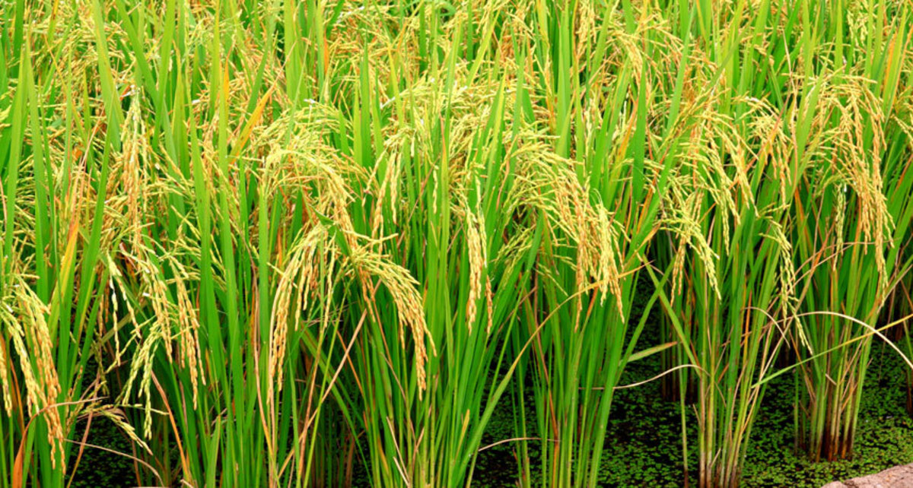

Optimizing Nitrogen Fertilizer Application in Paddies
Using Machine Learning for Leaf Colour Detection to enhance rice farming sustainability
Explore Our Research
Key Innovations
98% Accuracy
Our DenseNet121 model achieves unprecedented accuracy in nitrogen deficiency classification.
Mobile Optimization
Works on low-end smartphones with just 2GB RAM, processing in under 2 seconds.
Sustainable Impact
Reduces fertilizer overuse by 15% compared to traditional methods.